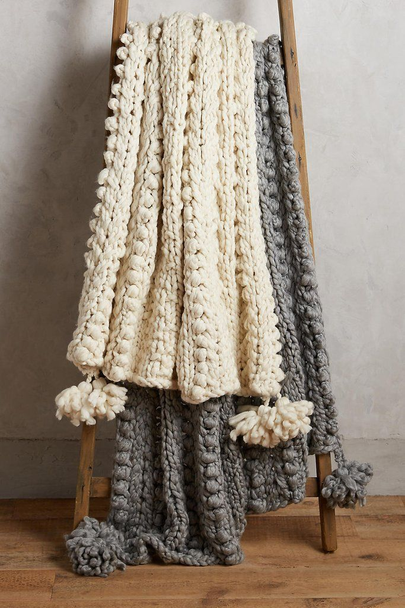
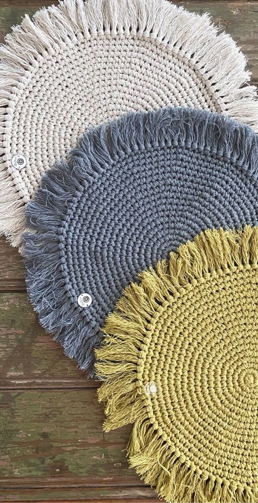
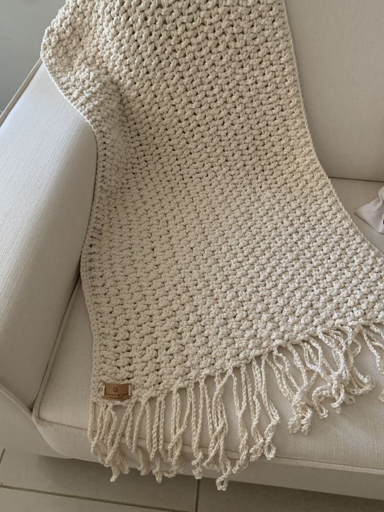
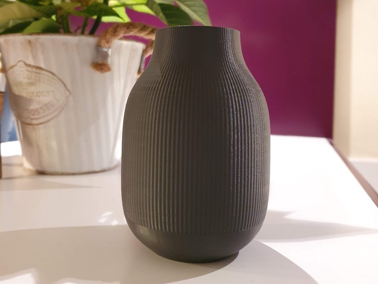
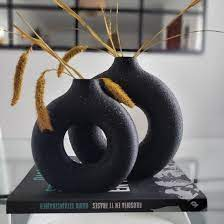
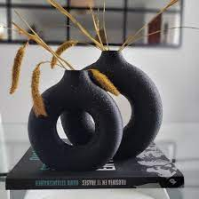

Nuestra línea se caracteriza por la calidad de nuestra materia prima, de fabricación casera, distintos tipos de material y estilos unicos para lo que uno necesite y más le guste
  Increíbles decoraciones hechas a mano, traídas del norte del país, una de delicadeza y elegancia como ningún otro material. cada una es única, no existen dos iguales gracias al toque artesanal de cada pieza
Con nuestras maquinas funcionando todo el día, llega a savra la nueva colección todo hecho en plástico PVC, lo cual lo hace lindo, económico y apto caídas, ideal para niños chiquitos y mascotas traviesas
 
